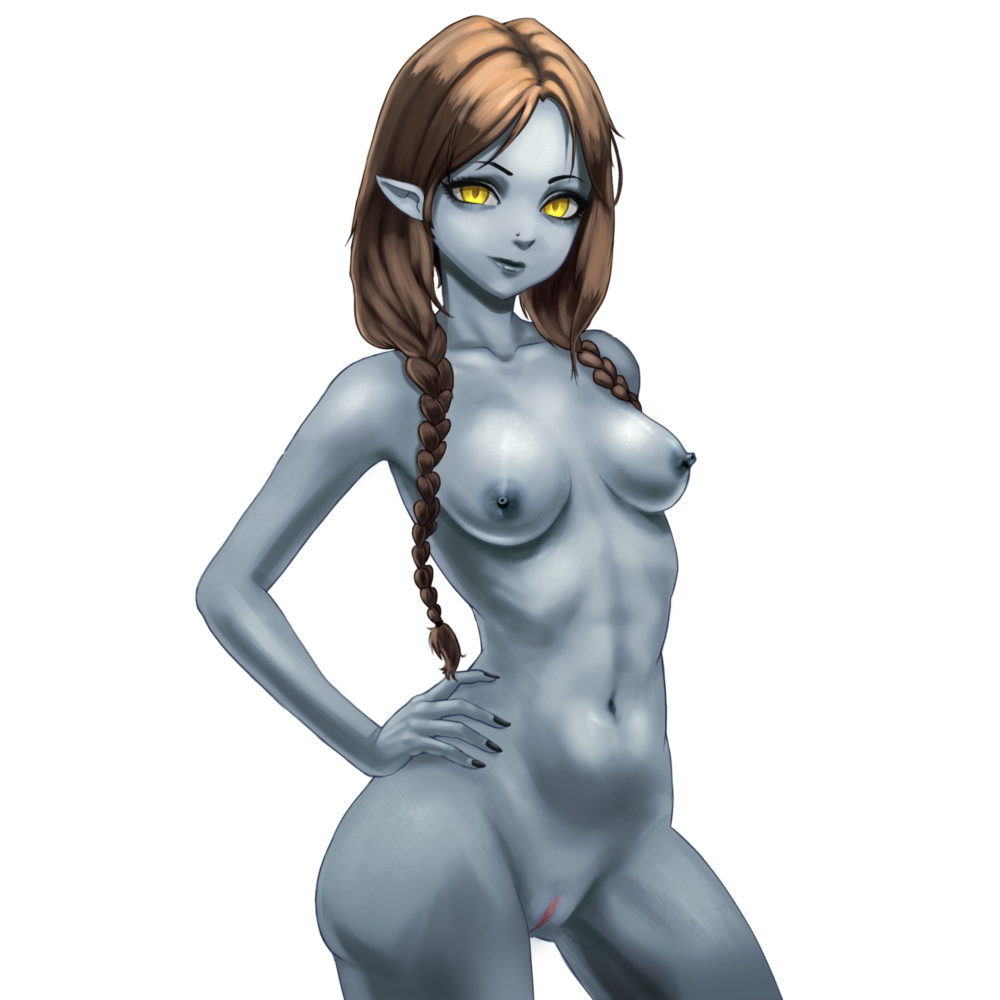
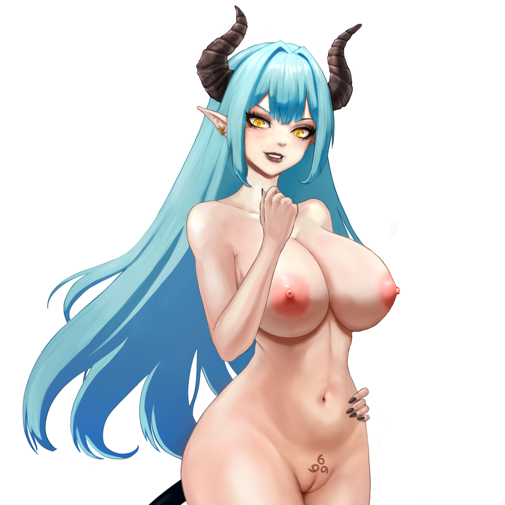
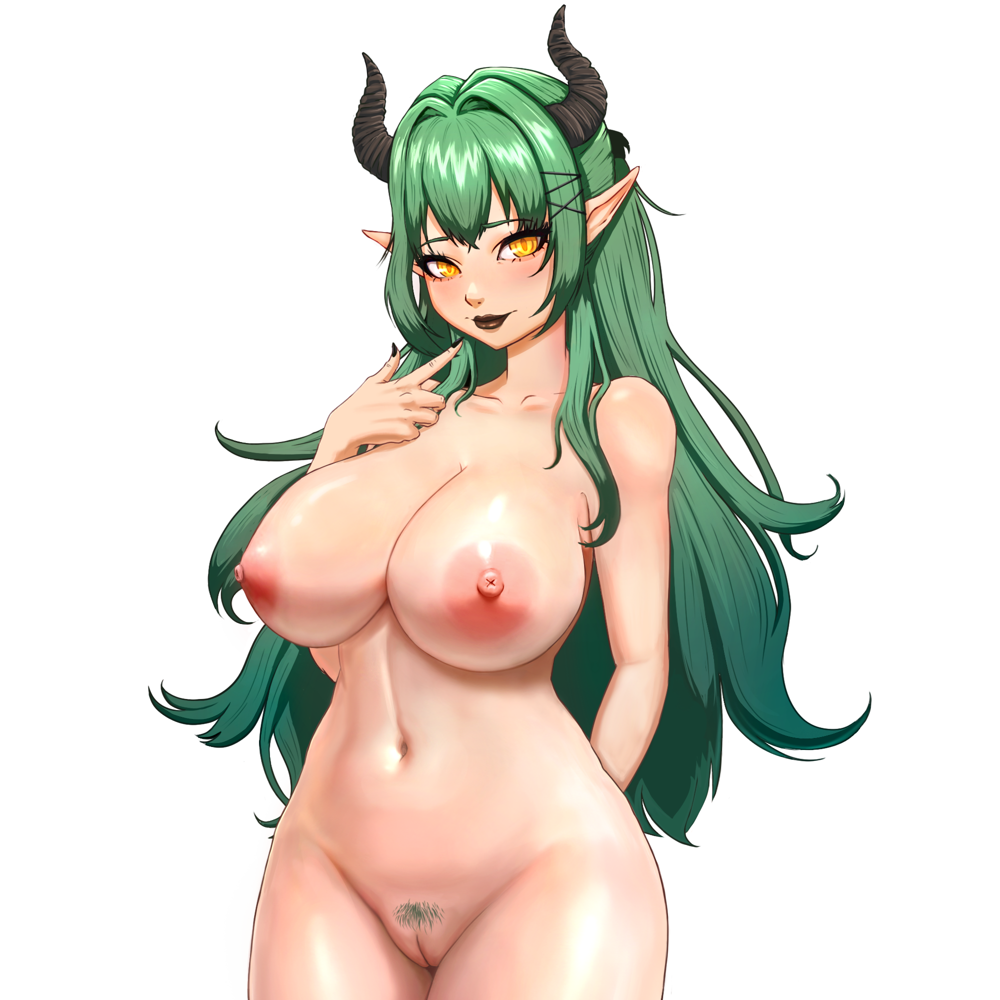

Shirley
Shirley is the island’s police officer and the cousin of the main character.
Clever, fearless, and always in control, she has a sharp mind that makes her as dangerous as she is reliable. Beneath her disciplined exterior lies a subtle allure—her confident presence, calm voice, and knowing gaze can be just as captivating as they are intimidating.
Her beautiful, striking red eyes are truly unique, glowing with intensity and mystery, leaving anyone who meets her unable to look away.

Mia
Mia, the protagonist’s sister, was transformed into a succubus by the Queen’s curse that fell upon Paradise Island.
Now she exudes a soft, dangerous allure—her voice tempting, her presence impossible to ignore.
Yet beneath that seductive charm, a trace of her former self still lingers.
The protagonist’s mission is clear: break the curse and bring her back.
Cassie
Cassie is the seductive CEO of the island’s most powerful company—a stunning blonde with a cold, commanding presence and impossible-to-ignore curves.
Sharp, demanding, and used to getting her way, she’s as difficult to win over as she is captivating.
Though the island’s curse is beginning to affect her, it only seems to deepen her allure.
Conquering her heart is no easy task—Cassie is a woman who never gives in without a fight.

Queen
The Queen is the enigmatic antagonist behind the curse of lust that has consumed Paradise Island.
Radiating a dark, hypnotic beauty, she feeds on the desire of those she has corrupted, growing stronger with every stolen fragment of passion.
Elegant, cruel, and irresistibly commanding, she moves with a seductive authority that bends others to her will.
Driven by a burning need for vengeance against the Demon King, she will stop at nothing to gather the power she needs—even if it means drowning the entire island in desire.
Selene
Selene is the shy daughter of the school’s headmistress, soft-spoken and seemingly innocent at first glance.
But beneath that gentle facade lies a deeply affectionate and quietly intense nature, now awakened by the island’s curse.
As her inhibitions slip away, her touch lingers a little longer, her gaze grows warmer—and far more tempting.
Caught between sweetness and rising desire, Selene reveals a captivating blend of tenderness and barely restrained passion that’s impossible to ignore.
Susan(Mom)
Susan, the protagonist’s mother, vanished the very night the Queen’s curse engulfed Paradise Island.
Warm, caring, and once a symbol of comfort, she now lingers as a haunting mystery.
Did she fall under the Queen’s spell… or become something even more dangerous? The thought of her gentle nature twisted into something alluring and forbidden drives the protagonist forward.
Somewhere on the island, Susan waits—changed, tempting, and unknown.

Juicy
Juicy, the Shikumi of the West, is a wild and playful spirit who lives for thrill and temptation.
Bold, teasing, and impossible to tame, she dances on the edge of danger with a mischievous smile that promises trouble.
Her energy is intoxicating, her touch lingering just enough to keep you wanting more.
Get too close, and she won’t just capture your attention—she’ll devour it with passion, leaving you breathless and craving whatever comes next.